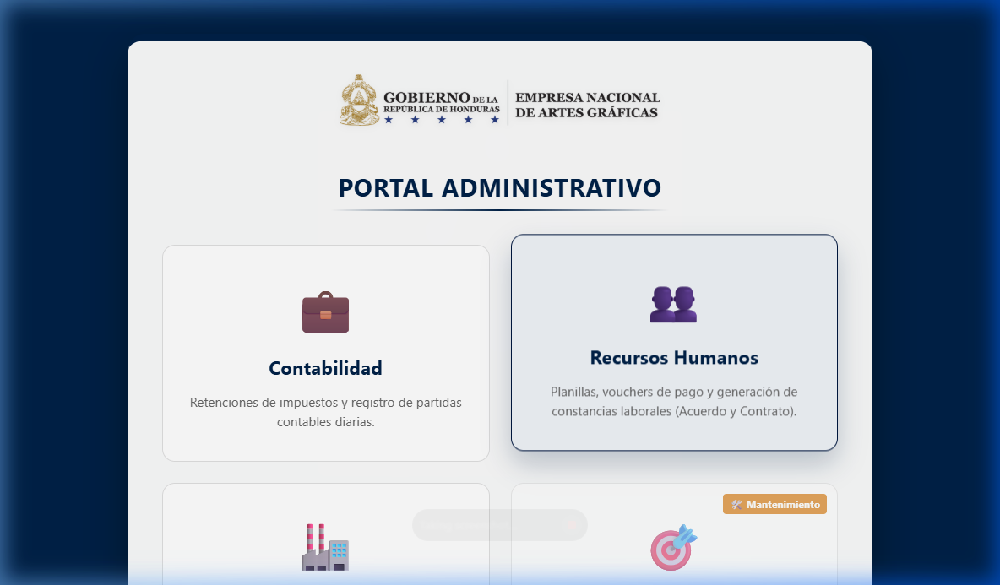
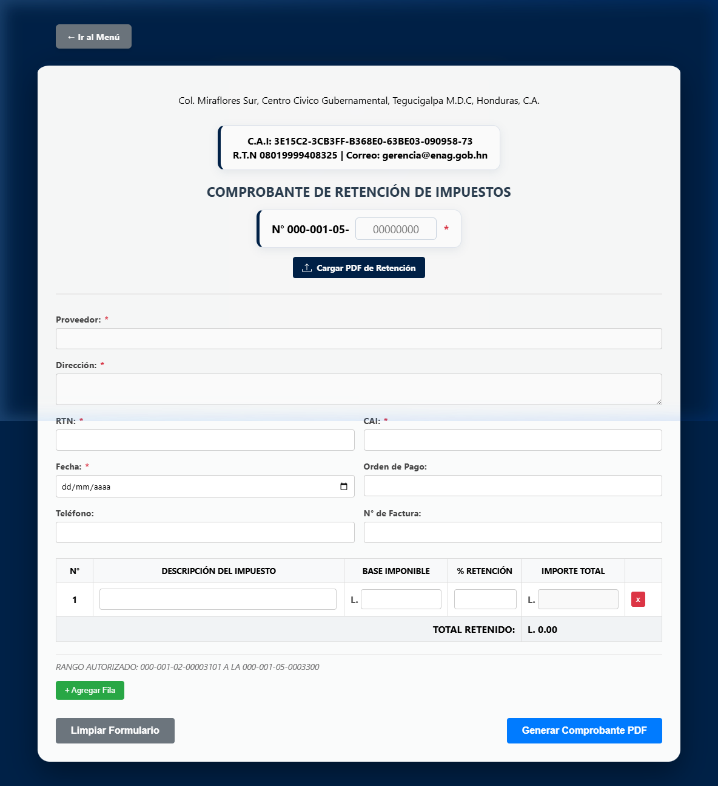
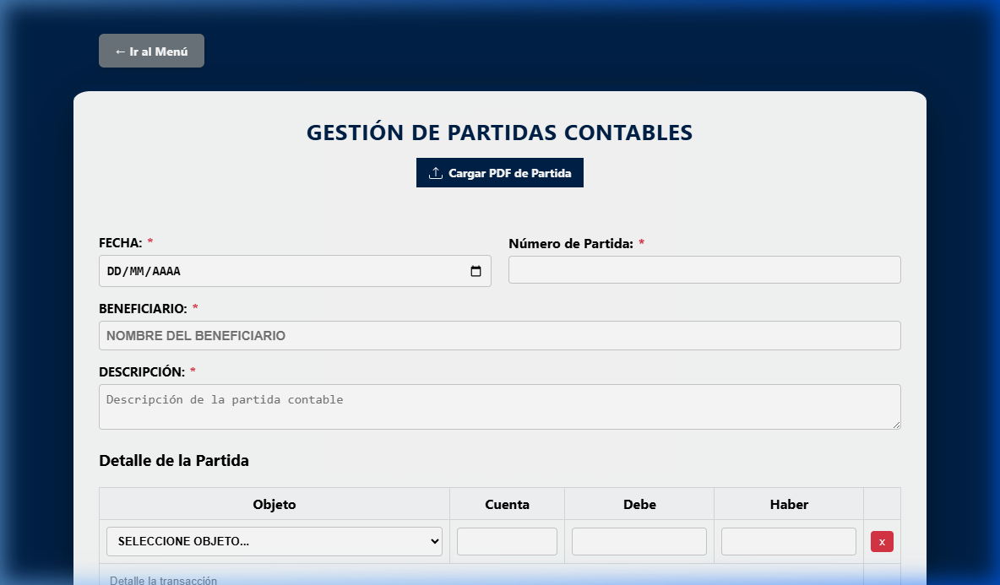
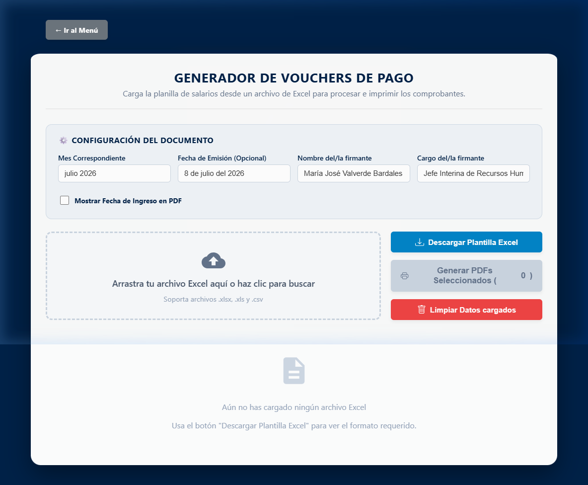
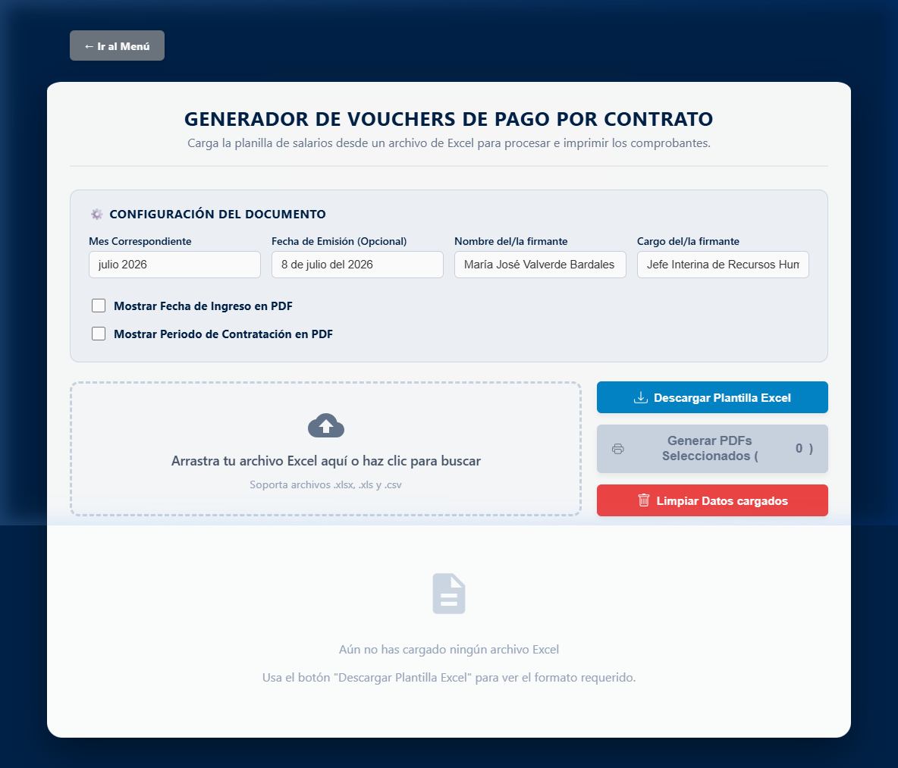
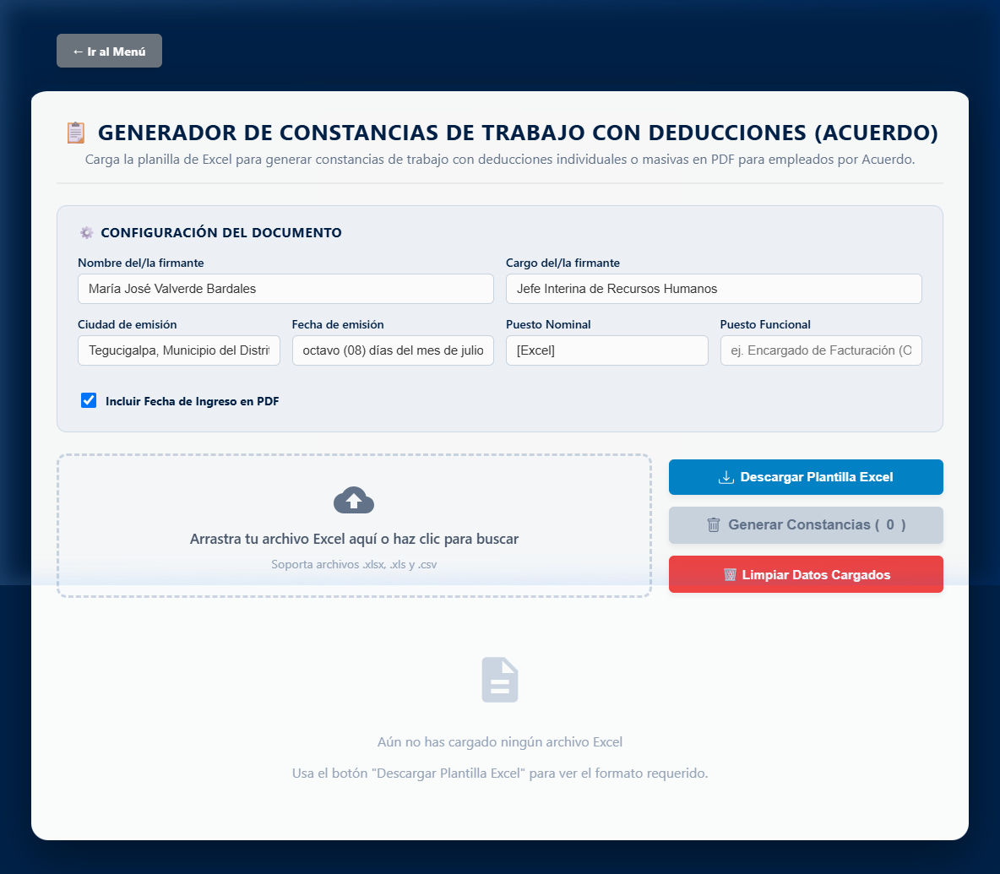
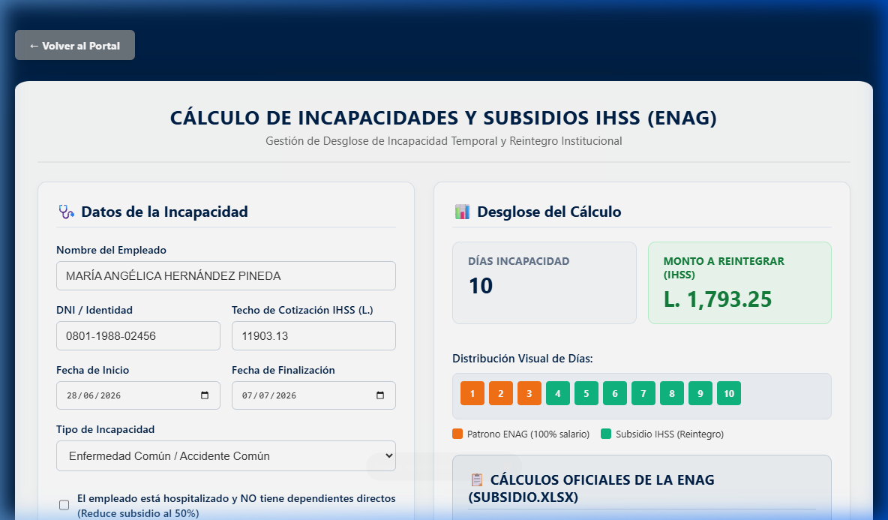
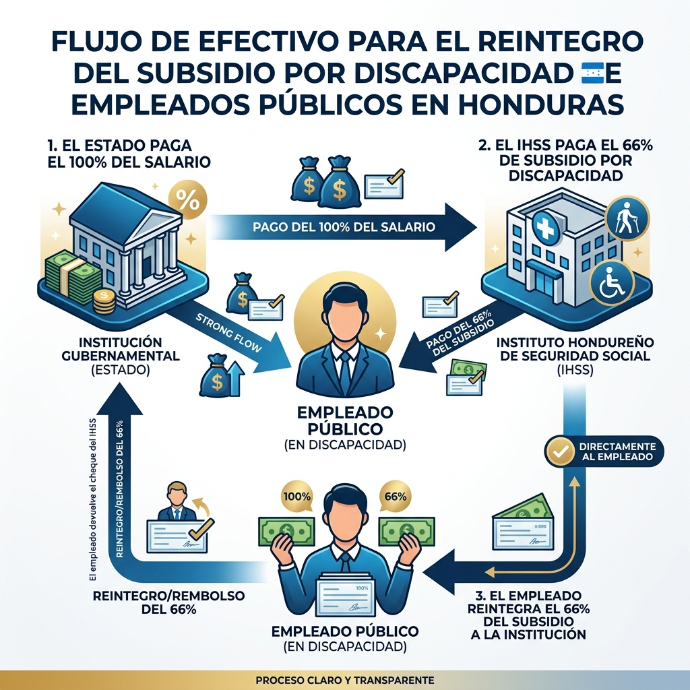
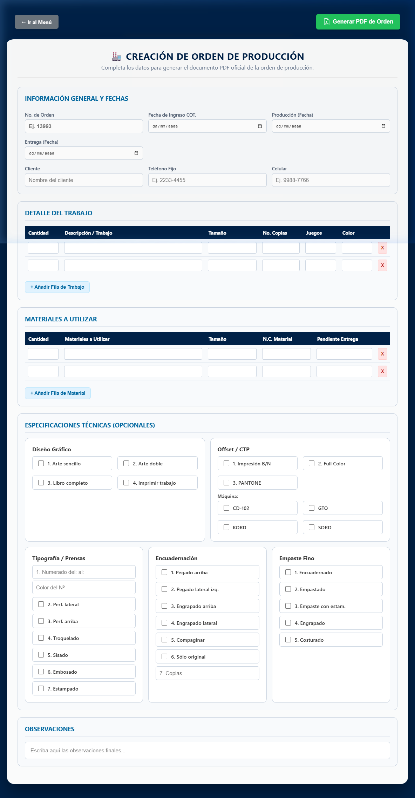

Bienvenido al Sistema de Gestión Administrativa de la Empresa Nacional de Artes Gráficas (ENAG). Este sistema web ha sido diseñado para unificar los procesos diarios de los departamentos de Contabilidad, Recursos Humanos y Producción.
Acceso Protegido por PIN
Para resguardar la confidencialidad de la información, el portal principal restringe el acceso a las áreas sensibles mediante claves de control:
Módulo de Contabilidad: Requiere ingresar la contraseña CONTA@2026.
Módulo de Recursos Humanos: Requiere ingresar la contraseña 1212.
Módulo de Producción: Es de acceso libre y no requiere PIN.

Figura 1: Captura de pantalla de la interfaz principal del Portal Administrativo de la ENAG.
⚠️ Advertencia de Seguridad:
Nunca comparta estas contraseñas con personal ajeno a los respectivos departamentos. Cambie las claves anualmente en coordinación con el administrador del sistema.
2. Módulo de Contabilidad
Este módulo cuenta con dos herramientas principales destinadas al control tributario e ingresos diarios del libro contable diario.
2.1. Retenciones de Impuestos
Permite registrar e imprimir los comprobantes oficiales de retención aplicados a proveedores del Estado.
Ingrese al formulario e ingrese el Nombre del Proveedor, RTN y el Concepto de la compra.
Indique el Monto Bruto de la factura.
Seleccione el porcentaje de retención a aplicar (ej. 1% o 12.5% según corresponda). El sistema calculará automáticamente el valor del impuesto retenido y el valor neto a pagar.
Presione "Descargar Comprobante PDF" para obtener el voucher listo para firma y sello de la institución.

Figura 2: Captura del formulario de Retenciones de Impuestos.
2.2. Registro de Partidas Contables
Utilizado para registrar los asientos de diario y garantizar el equilibrio de cuentas.
Indique la fecha y el concepto global del asiento contable.
Agregue las cuentas correspondientes (Debe y Haber).
Regla de Cuadre: El total acumulado del Debe debe ser exactamente igual al total del Haber. Si hay una diferencia (descuadre), el sistema bloqueará el guardado de la partida para evitar inconsistencias en la base de datos contable.

Figura 3: Captura de la interfaz para el registro de Partidas Contables de Diario.
3. Recursos Humanos — Vouchers de Pago
Esta sección permite automatizar la generación y distribución de recibos de pago (vouchers) mensuales de los empleados devengados en Acuerdo y Contrato a partir de un archivo Excel de nómina.
3.1. Vouchers de Pago (Acuerdo)
Permite cargar planillas para personal permanente bajo régimen de Acuerdo y emitir sus recibos membretados correspondientes.

Figura 4: Interfaz de carga de planilla y generación de vouchers para Acuerdo.
3.2. Vouchers de Pago (Contrato)
Permite cargar la planilla exclusiva para el personal bajo contrato temporal y emitir los recibos bajo la misma estructura.

Figura 5: Interfaz de carga de planilla y generación de vouchers para Contrato.
Procedimiento de Carga y Generación:
Seleccione el mes y año correspondiente al voucher.
Arrastre o cargue el archivo Excel de la planilla mensual de salarios (ej. planilla.xls) en el recuadro de carga.
El sistema procesará la hoja y listará en pantalla a todos los empleados con sus respectivos salarios brutos, deducciones (IHSS, jubilación, préstamos) y neto a pagar.
Puede buscar empleados mediante el cuadro de texto para verificar individualmente sus deducciones.
Presione "Generar Vouchers" para compilar y descargar los recibos membretados individuales listos para entrega.
4. Recursos Humanos — Constancias Laborales
Permite generar certificaciones oficiales de trabajo de forma masiva o individual, con o sin el desglose de deducciones salariales.
Formatos Disponibles:
Con Deducciones (Acuerdo / Contrato): Detalla el sueldo nominal junto con los valores mensuales deducidos por cooperativas, aportes y deducciones de ley. Es ideal para solicitudes de crédito bancario.
Sin Deducciones (Acuerdo / Contrato): Certifica únicamente el tiempo de servicio, puesto y el salario nominal bruto devengado.

Figura 6: Captura de la interfaz para la generación de Constancias de Trabajo.
Pasos para la Emisión:
Cargue la lista de empleados (mediante archivo XLS) o complete el formulario manual de datos generales (Nombre, Identidad, Fecha de Ingreso, Sueldo).
Seleccione el nombre del firmante autorizado de Recursos Humanos y su cargo para el pie de firma.
Haga clic en "Generar Constancia" para descargar el documento oficial membretado con formato formal de carta y firmas.
5. Recursos Humanos — Subsidios por Incapacidad IHSS
Este módulo calcula el subsidio por incapacidad temporal del IHSS y el desglose de reintegro institucional para el sector público (ENAG), alineado con la metodología oficial del archivo Subsidio.xlsx.
📌 Concepto de Reintegro en la ENAG:
Dado que el empleado percibe el 100% de su sueldo nominal normal por planilla de la ENAG mientras está incapacitado, la ley obliga a que el subsidio en efectivo otorgado por el IHSS (66% de la base) sea reintegrado a la tesorería de la institución.

Figura 7: Captura de pantalla del módulo interactivo para el cálculo de reintegros de incapacidades.
Metodología de Cálculo por Pasos:
Paso 1: Sumatoria de Días de 3 Meses Anteriores: Obtiene la suma de los días calendario reales de los tres meses previos al inicio de la incapacidad.
Paso 2: Sueldo de Referencia Diario: Se toma el Techo de Cotización vigente del IHSS (actualmente L. 11,903.13), se multiplica por 3 y se divide entre la suma de días del Paso 1:
Sueldo Diario de Referencia = (Techo IHSS * 3) / Sumatoria de Días
Paso 3: Distribución del Subsidio Diario:
Subsidio IHSS (66%): Corresponde al monto diario que el empleado recibe y debe reintegrar a la ENAG.
Aporte Patrono (34%): Porción complementaria que la institución asume para garantizar el sueldo diario.

Figura 8: Diagrama de flujo de fondos y proceso de reintegro de incapacidades en la ENAG.
Uso del Formulario:
Ingrese el nombre y DNI del empleado.
Introduzca la Fecha de Inicio y Fecha de Fin de la incapacidad (el sistema computará los días totales).
Seleccione el tipo de incapacidad:
Enfermedad/Accidente Común: Deduce 3 días de carencia a cargo del patrono. El IHSS paga desde el 4.º día.
Riesgo Profesional o Maternidad: Cubre el subsidio desde el 1.º día de la licencia sin carencia.
Marque la casilla de "Hospitalizado sin dependientes" si corresponde (reduce la cuota del IHSS del 66% al 50%).
Presione "Descargar Reporte PDF" para obtener el desglose firmado de control de caja.
6. Módulo de Producción
Diseñado para coordinar el trabajo en los talleres de imprenta, encuadernación y diseño de la ENAG.
Órdenes de Producción:
Abra la herramienta e ingrese los datos del cliente, la descripción del trabajo (libros, folletos, diarios oficiales La Gaceta).
Especifique la cantidad de tiraje, tipo de papel, tintas y acabados requeridos.
Indique la fecha estimada de entrega y el diseñador u operador de taller asignado.
Guarde la orden de producción. El sistema generará una hoja técnica que viaja físicamente con los materiales en el taller y un archivo PDF de control de producción.

Figura 9: Captura del formulario de Órdenes de Producción en los Talleres Gráficos.